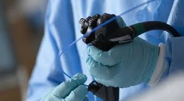
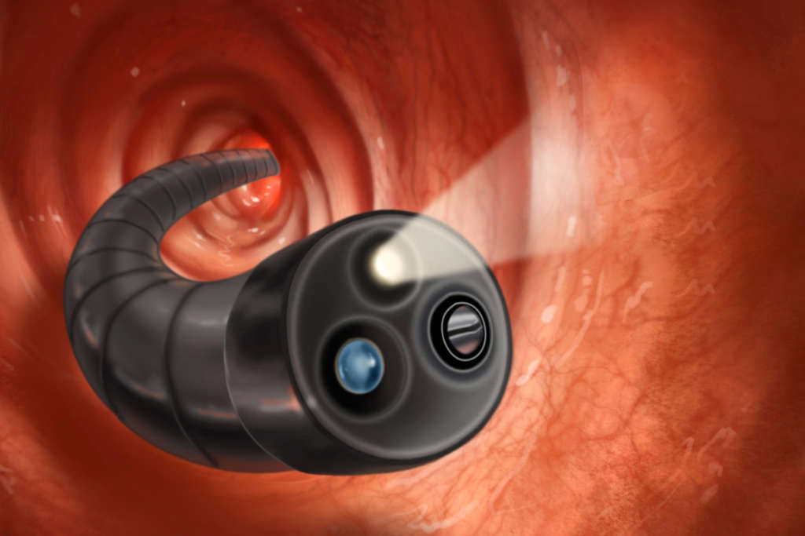
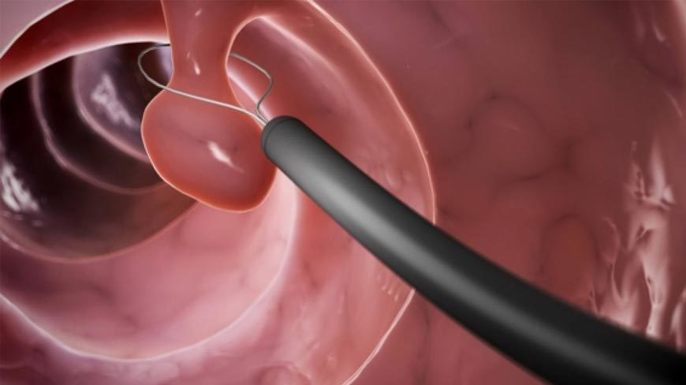
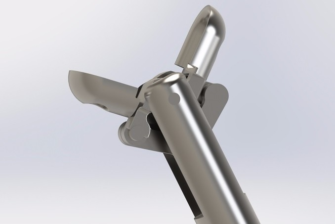

RN205 6691, B1824GDQ, Remedios de Escalada, Provincia de Buenos Aires 011 3591-8430
Instituto de Gastroenterología
Inicio
Profesionales
Especialidades
Estudios
Contacto
Principales estudios
Endoscopía digestiva alta

Videocolonoscopía

Polipectomía endoscopica

Toma de biopsias

Endoscopía digestiva alta
Videocolonoscopía
Polipectomía endoscópica
Mucosectomía endoscópica
Banding de várices esofágicas
Esclerosis de Angiodisplasias
Toma de biopsias
Enteroscopía empuje
Ablación por radiofrecuencia de Barret
Esclerosis de úlceras gastroduodenales
Esclerosis de várices con polidocanol
Mucosectomía gástrica
Dilatación esofágica con balón